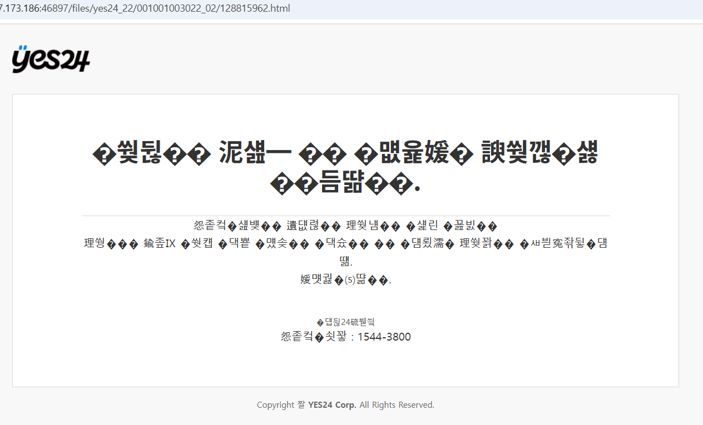

3330.6 / 482.146.907952047123242sw1kwon
June 22, 2025
library(rvest)
library(dplyr)
library(stringr)
library(tibble)
library(purrr)
library(fs)
library(readr)
# ----------- 안전 파서 유틸리티 (최종 통합본 유지) -----------
safe_css_text <- function(page, selector, attr = NULL) {
tryCatch({
node <- html_element(page, selector)
if (is.null(node)) return(NA_character_)
if (!is.null(attr)) {
val <- html_attr(node, attr)
} else {
val <- html_text(node, trim = TRUE)
}
if (val == "") NA_character_ else val
}, error = function(e) NA_character_)
}
safe_css_text_list <- function(page, selector) {
tryCatch({
nodes <- html_elements(page, selector)
if (length(nodes) == 0) return(NA_character_)
vals <- html_text(nodes, trim = TRUE)
vals <- vals[!str_detect(vals, "정보 더 보기/감추기")]
vals <- unique(vals)
paste(vals, collapse = "; ")
}, error = function(e) NA_character_)
}
safe_css_attr_list <- function(page, selector, attr) {
tryCatch({
nodes <- html_elements(page, selector)
if (length(nodes) == 0) return(NA_character_)
texts <- html_text(nodes, trim = TRUE)
urls <- html_attr(nodes, attr)
keep <- !str_detect(texts, "정보 더 보기/감추기")
urls <- urls[keep]
urls <- unique(urls)
paste(urls, collapse = "; ")
}, error = function(e) NA_character_)
}
safe_css_exist <- function(page, selector) {
tryCatch({
nodes <- html_elements(page, selector)
if (length(nodes) > 0) "Y" else "N"
}, error = function(e) "N")
}
parse_yes24_item <- function(item, category) {
preview_exist <- safe_css_exist(item, ".btn_preview")
ebook_nodes <- html_elements(item, ".info_relG a")
ebook_texts <- html_text(ebook_nodes, trim = TRUE)
ebook_price <- if (any(str_detect(ebook_texts, "eBook"))) {
str_extract(ebook_texts[which(str_detect(ebook_texts, "eBook"))], "[0-9,]+원?")
} else {
NA_character_
}
ebook_exist <- ifelse(is.na(ebook_price), "N", "Y")
tibble(
category = category,
goods_no = html_attr(item, "data-goods-no"),
title = safe_css_text(item, ".gd_name"),
subtitle = safe_css_text(item, ".gd_nameF, .gd_nameE"),
author = safe_css_text_list(item, ".info_auth a"),
author_url = safe_css_attr_list(item, ".info_auth a", "href"),
publisher = safe_css_text(item, ".info_pub a"),
publisher_url = safe_css_text(item, ".info_pub a", attr = "href"),
publish_date = safe_css_text(item, ".info_date"),
discount_rate = safe_css_text(item, ".txt_sale em.num"),
price_discount = safe_css_text(item, ".txt_num em.yes_b"),
price_original = safe_css_text(item, ".txt_num.dash em.yes_m"),
point = safe_css_text(item, ".yPoint"),
review_count = safe_css_text(item, ".rating_rvCount em.txC_blue"),
review_score = safe_css_text(item, ".rating_grade em.yes_b"),
sale_count = safe_css_text(item, ".saleNum"),
sale_status = safe_css_text(item, ".info_soldOut .shortV"),
event_title = safe_css_text(item, ".info_event .txt a"),
event_period = safe_css_text(item, ".info_event .date"),
tag = safe_css_text(item, ".info_tag .tag a"),
used_count = safe_css_text(item, ".relG_num"),
ebook_exist = ebook_exist,
ebook_price = ebook_price,
preview_exist = preview_exist,
revised_info = safe_css_text(item, ".info_revised"),
image_url = safe_css_text(item, ".img_bdr img", attr = "src"),
detail_url = paste0("https://www.yes24.com", safe_css_text(item, ".gd_name", attr = "href")),
delivery_info = safe_css_text(item, ".info_deli .deli_date"),
description = safe_css_text(item, ".info_read")
)
}
# ----------- 전체 폴더 반복 수집 시작 -----------
# 전체 처리 시간 기록 시작
overall_start <- Sys.time()
# 시작 폴더 목록 정의
base_path <- "~/yes24"
folder_names <- sprintf("001001003%03d", 19:32) # 019 ~ 032
folder_paths <- file.path(base_path, folder_names)
# 전체 반복
for (folder_path in folder_paths) {
start_time <- Sys.time()
folder_name <- path_file(folder_path)
cat("\n>> Processing:", folder_name, "\n")
file_list <- dir(folder_path, pattern = "\\.html$", full.names = TRUE)
df_list <- list()
for (file in file_list) {
html <- read_html(file)
books <- html_elements(html, "li[data-goods-no]")
if (length(books) == 0) next
category_path <- html_element(html, "u.cate") %>% html_text(trim = TRUE)
df <- map_dfr(books, ~ parse_yes24_item(.x, category_path))
df_list[[file]] <- df
}
df_all <- bind_rows(df_list)
# CSV 저장
output_path <- file.path(folder_path, paste0(folder_name, ".csv"))
tmp_path <- tempfile(fileext = ".csv")
write.csv(df_all, file = tmp_path, row.names = FALSE, fileEncoding = "UTF-8")
lines <- readLines(tmp_path, encoding = "UTF-8")
lines[1] <- paste0("\ufeff", lines[1])
writeLines(lines, output_path, useBytes = TRUE)
# 로그 저장
end_time <- Sys.time()
duration <- end_time - start_time
log_path <- file.path(folder_path, paste0(folder_name, "_log.txt"))
log_msg <- paste0(
"Scraping started at: ", format(start_time, "%Y-%m-%d %H:%M:%S"), "\n",
"Scraping ended at: ", format(end_time, "%Y-%m-%d %H:%M:%S"), "\n",
"Elapsed time: ", round(as.numeric(duration, units = "secs"), 2), " seconds (", round(duration, 2), ")\n",
"Total books collected: ", nrow(df_all), "\n",
"Total HTML files processed: ", length(file_list), "\n"
)
writeLines(log_msg, log_path)
cat("✅ Completed:", folder_name, "- Books:", nrow(df_all), "\n")
}
# 전체 처리 종료
overall_end <- Sys.time()
overall_duration <- overall_end - overall_start
# 전체 로그
overall_log_msg <- paste0(
"Scraping started at: ", format(overall_start, "%Y-%m-%d %H:%M:%S"), "\n",
"Scraping ended at: ", format(overall_end, "%Y-%m-%d %H:%M:%S"), "\n",
"Elapsed time: ", round(as.numeric(overall_duration, units = "secs"), 2), " seconds (", round(overall_duration, 2), ")\n"
)
writeLines(overall_log_msg, file.path(root_dir, "yes24_overall_log.txt"))library(rvest)
library(dplyr)
library(stringr)
library(tibble)
library(readr)
library(fs)
library(future)
library(future.apply)
# ---------- 안전 파싱 유틸리티 ----------
safe_css_text <- function(page, selector, attr = NULL) {
tryCatch({
node <- html_element(page, selector)
if (is.null(node)) return(NA_character_)
if (!is.null(attr)) {
val <- html_attr(node, attr)
} else {
val <- html_text(node, trim = TRUE)
}
if (val == "") NA_character_ else val
}, error = function(e) NA_character_)
}
safe_css_text_list <- function(page, selector) {
tryCatch({
nodes <- html_elements(page, selector)
if (length(nodes) == 0) return(NA_character_)
vals <- html_text(nodes, trim = TRUE)
vals <- vals[!str_detect(vals, "정보 더 보기/감추기")]
vals <- unique(vals)
paste(vals, collapse = "; ")
}, error = function(e) NA_character_)
}
safe_css_attr_list <- function(page, selector, attr) {
tryCatch({
nodes <- html_elements(page, selector)
if (length(nodes) == 0) return(NA_character_)
texts <- html_text(nodes, trim = TRUE)
urls <- html_attr(nodes, attr)
keep <- !str_detect(texts, "정보 더 보기/감추기")
urls <- urls[keep]
urls <- unique(urls)
paste(urls, collapse = "; ")
}, error = function(e) NA_character_)
}
safe_css_exist <- function(page, selector) {
tryCatch({
nodes <- html_elements(page, selector)
if (length(nodes) > 0) "Y" else "N"
}, error = function(e) "N")
}
parse_yes24_item <- function(item, category) {
preview_exist <- safe_css_exist(item, ".btn_preview")
ebook_nodes <- html_elements(item, ".info_relG a")
ebook_texts <- html_text(ebook_nodes, trim = TRUE)
ebook_price <- if (any(str_detect(ebook_texts, "eBook"))) {
str_extract(ebook_texts[which(str_detect(ebook_texts, "eBook"))], "[0-9,]+원?")
} else {
NA_character_
}
ebook_exist <- ifelse(is.na(ebook_price), "N", "Y")
tibble(
category = category,
goods_no = html_attr(item, "data-goods-no"),
title = safe_css_text(item, ".gd_name"),
subtitle = safe_css_text(item, ".gd_nameF, .gd_nameE"),
author = safe_css_text_list(item, ".info_auth a"),
author_url = safe_css_attr_list(item, ".info_auth a", "href"),
publisher = safe_css_text(item, ".info_pub a"),
publisher_url = safe_css_text(item, ".info_pub a", attr = "href"),
publish_date = safe_css_text(item, ".info_date"),
discount_rate = safe_css_text(item, ".txt_sale em.num"),
price_discount = safe_css_text(item, ".txt_num em.yes_b"),
price_original = safe_css_text(item, ".txt_num.dash em.yes_m"),
point = safe_css_text(item, ".yPoint"),
review_count = safe_css_text(item, ".rating_rvCount em.txC_blue"),
review_score = safe_css_text(item, ".rating_grade em.yes_b"),
sale_count = safe_css_text(item, ".saleNum"),
sale_status = safe_css_text(item, ".info_soldOut .shortV"),
event_title = safe_css_text(item, ".info_event .txt a"),
event_period = safe_css_text(item, ".info_event .date"),
tag = safe_css_text(item, ".info_tag .tag a"),
used_count = safe_css_text(item, ".relG_num"),
ebook_exist = ebook_exist,
ebook_price = ebook_price,
preview_exist = preview_exist,
revised_info = safe_css_text(item, ".info_revised"),
image_url = safe_css_text(item, ".img_bdr img", attr = "src"),
detail_url = paste0("https://www.yes24.com", safe_css_text(item, ".gd_name", attr = "href")),
delivery_info = safe_css_text(item, ".info_deli .deli_date"),
description = safe_css_text(item, ".info_read")
)
}
# ---------- 병렬 엔진 시작 ----------
# 전체 병렬 처리 시간 기록 시작
overall_start <- Sys.time()
# 폴더 목록 정의
root_dir <- "~/yes24"
folder_names <- sprintf("001001003%03d", 19:32) # 19~32
folder_paths <- file.path(root_dir, folder_names)
# 병렬 세팅 (코어 64개 사용)
plan(multisession, workers = 64)
# 병렬 실행
future_lapply(folder_paths, function(folder_path) {
start_time <- Sys.time()
folder_name <- path_file(folder_path)
cat("\n>> Processing:", folder_name, "\n")
file_list <- dir(folder_path, pattern = "\\.html$", full.names = TRUE)
df_list <- list()
for (file in file_list) {
html <- tryCatch(read_html(file), error = function(e) return(NULL))
if (is.null(html)) next
books <- html_elements(html, "li[data-goods-no]")
if (length(books) == 0) next
category_path <- html_element(html, "u.cate") %>% html_text(trim = TRUE)
df <- map_dfr(books, ~ parse_yes24_item(.x, category_path))
df_list[[file]] <- df
}
df_all <- bind_rows(df_list)
# CSV 저장
csv_path <- file.path(folder_path, paste0(folder_name, "_p.csv"))
tmp_path <- tempfile(fileext = "_p.csv")
write.csv(df_all, file = tmp_path, row.names = FALSE, fileEncoding = "UTF-8")
lines <- readLines(tmp_path, encoding = "UTF-8")
lines[1] <- paste0("\ufeff", lines[1])
writeLines(lines, csv_path, useBytes = TRUE)
# 로그 기록
end_time <- Sys.time()
duration <- end_time - start_time
log_msg <- paste0(
"Scraping started at: ", format(start_time, "%Y-%m-%d %H:%M:%S"), "\n",
"Scraping ended at: ", format(end_time, "%Y-%m-%d %H:%M:%S"), "\n",
"Elapsed time: ", round(as.numeric(duration, units = "secs"), 2), " seconds (", round(duration, 2), ")\n",
"Total books collected: ", nrow(df_all), "\n",
"Total HTML files processed: ", length(file_list), "\n"
)
writeLines(log_msg, file.path(folder_path, paste0(folder_name, "_p_log.txt")))
cat("✅ Completed:", folder_name, "- Books:", nrow(df_all), "\n")
})
# 전체 병렬 처리 종료
overall_end <- Sys.time()
overall_duration <- overall_end - overall_start
# 전체 병렬 전체 로그
overall_log_msg <- paste0(
"Scraping started at: ", format(overall_start, "%Y-%m-%d %H:%M:%S"), "\n",
"Scraping ended at: ", format(overall_end, "%Y-%m-%d %H:%M:%S"), "\n",
"Elapsed time: ", round(as.numeric(overall_duration, units = "secs"), 2), " seconds (", round(overall_duration, 2), ")\n"
)
writeLines(overall_log_msg, file.path(root_dir, "yes24_parallel_overall_log.txt"))
# 병렬 모드 종료
plan(sequential)yes24/page_html2/yes24_overall_log.txt
Scraping started at: 2025-06-20 18:53:56
Scraping ended at: 2025-06-20 19:49:27
Elapsed time: 3330.6 seconds (55.51)yes24/page_html2/yes24_parallel_overall_log.txt
Scraping started at: 2025-06-21 00:37:35
Scraping ended at: 2025-06-21 00:45:37
Elapsed time: 482.14 seconds (8.04)▶ Processing: ~/yes24_22
Error in (function (.x, .f, ..., .progress = FALSE) :
ℹ In index: 1.
Caused by error in `map()`:
ℹ In index: 121.
ℹ With name: /root/yes24_22/001001003022_02/128815962.html.
Caused by error in `UseMethod()`:
! no applicable method for 'xml_find_first' applied to an object of class "c('tbl_df', 'tbl', 'data.frame')"
library(rvest)
library(tidyverse)
library(fs)
library(furrr)
base_path <- getwd()
folder_names <- sprintf("yes24_%02d", 19:32)
folder_paths <- file.path(base_path, folder_names)
plan(multisession, workers = 64)
future_walk(folder_paths, function(folder_path) {
cat("\n🔍 Checking folder:", folder_path, "\n")
file_list <- dir_ls(folder_path, recurse = TRUE, regexp = "\\.html$", type = "file")
if (length(file_list) == 0) {
cat("❗ No HTML files found.\n")
return(NULL)
}
bad_files <- vector("character")
for (file in file_list) {
result <- tryCatch({
read_html(file)
NULL
}, error = function(e) {
file # 실패시 전체 경로 반환
})
if (!is.null(result)) {
bad_files <- c(bad_files, result)
# ★ 바로바로 콘솔에 출력 ★
cat("❌ Failed file:", result, "\n")
}
}
if (length(bad_files) == 0) {
cat("✅ All files loaded successfully.\n")
} else {
cat("❌ Total failed files in folder:", length(bad_files), "\n")
}
})
plan(sequential)▶ Processing: /root/yes24_19
✅ Completed: yes24_19 - Books: 4075
▶ Processing: /root/yes24_20
❗ Parse error: /root/yes24_20/001001003020_09/6971577.html
✅ Completed: yes24_20 - Books: 2332
▶ Processing: /root/yes24_21
✅ Completed: yes24_21 - Books: 848
▶ Processing: /root/yes24_22
❗ Parse error: /root/yes24_22/001001003022_02/128815962.html
❗ Parse error: /root/yes24_22/001001003022_09/108929583.html
❗ Parse error: /root/yes24_22/001001003022_21/59417581.html
✅ Completed: yes24_22 - Books: 7638
▶ Processing: /root/yes24_23
✅ Completed: yes24_23 - Books: 954
▶ Processing: /root/yes24_24
✅ Completed: yes24_24 - Books: 2513
▶ Processing: /root/yes24_25
✅ Completed: yes24_25 - Books: 3331
▶ Processing: /root/yes24_26
❗ Parse error: /root/yes24_26/001001003026_04/84794503.html
❗ Parse error: /root/yes24_26/001001003026_10/56939.html
✅ Completed: yes24_26 - Books: 1154
▶ Processing: /root/yes24_27
✅ Completed: yes24_27 - Books: 1618
▶ Processing: /root/yes24_28
❗ Parse error: /root/yes24_28/001001003028_09/84794503.html
❗ Parse error: /root/yes24_28/001001003028_10/74597949.html
✅ Completed: yes24_28 - Books: 6715
▶ Processing: /root/yes24_29
❗ Parse error: /root/yes24_29/001001003029_08/17380968.html
✅ Completed: yes24_29 - Books: 3421
▶ Processing: /root/yes24_30
❗ Parse error: /root/yes24_30/001001003030_48/182240.html
✅ Completed: yes24_30 - Books: 5773
▶ Processing: /root/yes24_31
❗ Parse error: /root/yes24_31/001001003031_61/91957.html
✅ Completed: yes24_31 - Books: 7414
▶ Processing: /root/yes24_32
✅ Completed: yes24_32 - Books: 2175 library(rvest)
library(tidyverse)
library(fs)
library(furrr)
# ---------- 기존 파서 (parse_book_page 함수) ----------
parse_book_page <- function(file_path) {
book_id <- str_extract(basename(file_path), "\\d+")
page <- read_html(file_path)
extract_safe <- function(selector) {
node <- html_element(page, selector)
if (is.na(node) || is.null(node)) return(NA_character_)
txt <- html_text2(node)
if (is.na(txt) || txt == "") return(NA_character_)
txt
}
# 기본 서지 정보
title <- extract_safe(".gd_name")
subtitle <- extract_safe(".gd_nameE")
feature <- extract_safe(".gd_feature")
author_nodes <- html_elements(page, ".gd_auth a")
authors <- if (length(author_nodes) > 0) author_nodes %>% html_text2() %>% unique() %>% paste(collapse = ", ") else NA_character_
pub_node <- html_element(page, ".gd_pub a")
publisher <- if (!is.na(pub_node)) html_text2(pub_node) else NA_character_
pub_onclick <- if (!is.na(pub_node)) html_attr(pub_node, "onclick") else NA_character_
publisher_link <- if (!is.na(pub_onclick)) {
match <- str_match(pub_onclick, "openUrl\\('(.*?)'")
if (!is.na(match[2])) paste0("https://www.yes24.com", match[2]) else NA_character_
} else NA_character_
rows <- html_elements(page, "table tbody tr")
original_price <- sale_price <- NA_character_
for (row in rows) {
th_node <- html_element(row, "th")
th_text <- if (!is.na(th_node)) html_text2(th_node) else NA_character_
if (!is.na(th_text) && str_detect(th_text, "정가")) {
original_price <- html_text2(html_element(row, "td span em"))
}
if (!is.na(th_text) && str_detect(th_text, "판매가")) {
sale_price <- html_text2(html_element(row, "td span em"))
}
}
rating <- extract_safe("#spanGdRating em")
review_count <- extract_safe(".gd_reviewCount em")
sales_node <- html_element(page, ".gd_sellNum")
sales_text <- if (!is.na(sales_node)) html_text2(sales_node) else NA_character_
sales_index <- if (!is.na(sales_text)) str_extract(sales_text, "\\d[\\d,]*") else NA_character_
sales_index <- if (!is.na(sales_index)) gsub(",", "", sales_index) else NA_character_
best_node <- html_element(page, ".gd_best dd")
best_rank <- if (!is.na(best_node)) html_text2(best_node) else NA_character_
series_node <- html_element(page, ".gd_keynote .lnk_series")
series <- if (!is.na(series_node)) html_text(series_node, trim = TRUE) else NA_character_
series_onclick <- if (!is.na(series_node)) html_attr(series_node, "onclick") else NA_character_
series_link <- if (!is.na(series_onclick)) {
match <- str_match(series_onclick, "openUrl\\('(.*?)'")
if (!is.na(match[2])) paste0("https://www.yes24.com", match[2]) else NA_character_
} else NA_character_
partbook_node <- html_element(page, "#selPartBookWrap li[data-partbookvalue='1']")
partbook_option <- if (!is.na(partbook_node)) html_text2(partbook_node) else NA_character_
sale_state <- extract_safe(".gd_saleState em")
pub_date <- extract_safe(".gd_date")
category_nodes <- html_elements(page, "#infoset_goodsCate ul li")
category_all <- category_nodes %>%
map_chr(~ .x %>% html_elements("a") %>% html_text2() %>% paste(collapse = " > ")) %>%
paste(collapse = "; ")
if (category_all == "") category_all <- NA_character_
first_cat <- category_nodes[1] %>% html_elements("a") %>% html_text2()
category_main <- if (length(first_cat) >= 2) first_cat[2] else NA_character_
category_middle <- if (length(first_cat) >= 3) first_cat[3] else NA_character_
category_small <- if (length(first_cat) >= 4) first_cat[4] else NA_character_
get_textarea_safe <- function(selector) {
node <- html_element(page, selector)
if (is.na(node) || is.null(node)) return(NA_character_)
txt <- html_text2(node) %>% str_trim()
if (txt == "") return(NA_character_)
return(txt)
}
intro <- get_textarea_safe("#infoset_introduce .infoWrap_txt textarea")
in_book <- get_textarea_safe("#infoset_inBook .infoWrap_txt textarea")
publisher_review <- get_textarea_safe("#infoset_pubReivew .infoWrap_txt textarea")
contents <- get_textarea_safe("#infoset_toc .infoWrap_txt textarea")
recomm_nodes <- html_elements(page, "#infoset_nomiCmt .infoWrap_txt")
recomm_comment <- recomm_nodes %>% map_chr(~ html_text2(.x) %>% str_trim()) %>% paste(collapse = "; ")
recomm_recommender <- recomm_nodes %>% map_chr(~ html_element(.x, "b") %>% html_text2() %>% str_trim()) %>% paste(collapse = "; ")
if (recomm_comment == "") recomm_comment <- NA_character_
if (recomm_recommender == "") recomm_recommender <- NA_character_
spec_rows <- html_elements(page, "#infoset_specific tbody tr")
pub_date_specific <- physical_info <- isbn13 <- isbn10 <- NA_character_
for (row in spec_rows) {
label <- html_text2(html_element(row, "th"))
value <- html_text2(html_element(row, "td"))
if (label == "발행일") pub_date_specific <- value
if (label == "쪽수, 무게, 크기") physical_info <- value
if (label == "ISBN13") isbn13 <- value
if (label == "ISBN10") isbn10 <- value
}
cover_image <- html_element(page, ".gd_imgArea .gd_3dGrp .gImg") %>% html_attr("src")
side_image <- html_element(page, ".gd_imgLft img") %>% html_attr("src")
back_image <- html_element(page, ".gd_imgBack img") %>% html_attr("src")
size_compare <- if (length(html_elements(page, "a:contains('사이즈비교')")) > 0) "Y" else NA_character_
card_news <- if (length(html_elements(page, "a:contains('카드뉴스')")) > 0) "Y" else NA_character_
share_enabled <- if (length(html_elements(page, "#shareGPop")) > 0) "Y" else NA_character_
preview_available <- if (length(html_elements(page, "a:contains('미리보기')")) > 0) "Y" else NA_character_
author_blocks <- html_elements(page, "#infoset_authorGrp .authorInfoGrp")
author_count <- length(author_blocks)
extract_author_info <- function(block) {
role_full <- html_element(block, ".author_name") %>% html_text2()
role <- str_split(role_full, ":", simplify = TRUE)[1] %>% str_trim()
name <- html_element(block, ".author_name a") %>% html_text2()
id <- html_attr(block, "authno")
intro_node <- html_element(block, ".author_info.info_origin")
intro <- if (!is.na(intro_node)) html_text2(intro_node) %>% str_squish() else NA_character_
tibble(role = role, name = name, id = id, intro = intro)
}
author_infos <- if (author_count > 0) {
map_dfr(author_blocks, extract_author_info)
} else {
tibble(role = NA_character_, name = NA_character_, id = NA_character_, intro = NA_character_)
}
fill_na <- function(x, n) { length(x) <- n; replace(x, is.na(x), NA_character_) }
author_roles <- fill_na(author_infos$role, 3)
author_names <- fill_na(author_infos$name, 3)
author_ids <- fill_na(author_infos$id, 3)
author_intros <- fill_na(author_infos$intro, 3)
tibble(
book_id, title, subtitle, feature, authors, publisher, publisher_link, original_price, sale_price,
rating, review_count, sales_index, best_rank, series, series_link, partbook_option, sale_state,
pub_date, pub_date_specific, physical_info, isbn13, isbn10,
category_all, category_main, category_middle, category_small,
intro, in_book, publisher_review, contents, recomm_comment, recomm_recommender,
cover_image, side_image, back_image,
preview_available, size_compare, card_news, share_enabled,
author_count,
author1_role = author_roles[1], author1_name = author_names[1], author1_id = author_ids[1], author1_intro = author_intros[1],
author2_role = author_roles[2], author2_name = author_names[2], author2_id = author_ids[2], author2_intro = author_intros[2],
author3_role = author_roles[3], author3_name = author_names[3], author3_id = author_ids[3], author3_intro = author_intros[3]
)
}
# ---------------- 병렬 수집 파이프라인 안정형 ----------------
process_yes24_folder <- function(parent_folder) {
start_time <- Sys.time()
cat("\n▶ Processing:", parent_folder, "\n")
file_list <- dir_ls(parent_folder, recurse = TRUE, regexp = "\\.html$", type = "file")
good_results <- list()
error_files <- list()
for (f in file_list) {
res <- tryCatch({
parse_book_page(f)
}, error = function(e) {
error_files <<- c(error_files, f)
NULL
})
if (!is.null(res)) good_results <- c(good_results, list(res))
}
if (length(good_results) > 0) {
df_all <- bind_rows(good_results)
} else {
df_all <- tibble()
}
# 파일명 설정
folder_name <- basename(parent_folder)
output_name <- paste0("ITM_001001003", substr(folder_name, 7, 8), ".csv")
output_path <- file.path(parent_folder, output_name)
# CSV 저장
tmp_path <- tempfile(fileext = ".csv")
write.csv(df_all, file = tmp_path, row.names = FALSE, fileEncoding = "UTF-8")
lines <- readLines(tmp_path, encoding = "UTF-8")
lines[1] <- paste0("\ufeff", lines[1])
writeLines(lines, output_path, useBytes = TRUE)
# 로그 저장
end_time <- Sys.time()
duration <- end_time - start_time
log_msg <- paste0(
"Folder: ", folder_name, "\n",
"Start: ", format(start_time, "%Y-%m-%d %H:%M:%S"), "\n",
"End: ", format(end_time, "%Y-%m-%d %H:%M:%S"), "\n",
"Elapsed: ", round(as.numeric(duration, units = "secs"), 2), " sec (", round(duration, 2), ")\n",
"HTML files processed: ", length(file_list), "\n",
"Books parsed: ", nrow(df_all), "\n"
)
writeLines(log_msg, file.path(parent_folder, paste0(folder_name, "_log.txt")))
# 에러 로그 기록
if (length(error_files) > 0) {
writeLines(unlist(error_files), file.path(parent_folder, paste0(folder_name, "_error.txt")))
}
cat("✅ Completed:", folder_name, " - Books:", nrow(df_all), "\n")
}
# ---------------- 전체 병렬 실행 ----------------
overall_start <- Sys.time()
base_path <- getwd()
folder_names <- sprintf("yes24_%02d", 19:32)
folder_paths <- file.path(base_path, folder_names)
plan(multisession, workers = 64)
future_walk(folder_paths, process_yes24_folder)
plan(sequential)
overall_end <- Sys.time()
overall_duration <- overall_end - overall_start
overall_log_msg <- paste0(
"Overall Start: ", format(overall_start, "%Y-%m-%d %H:%M:%S"), "\n",
"Overall End: ", format(overall_end, "%Y-%m-%d %H:%M:%S"), "\n",
"Total Elapsed: ", round(as.numeric(overall_duration, units = "secs"), 2), " sec (", round(overall_duration, 2), ")\n"
)
writeLines(overall_log_msg, file.path(base_path, "yes24_overall_log.txt"))
cat("\n📦 ALL DONE!\n")yes24/book_html2/yes24_overall_log.txt
Overall Start: 2025-06-22 23:56:53
Overall End: 2025-06-23 00:23:22
Total Elapsed: 1589.09 sec (26.48)